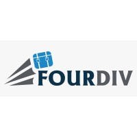

Nadula Disanayaka

Hello! I am 4th Year software engneering student at SLIIT. I am a confident, flexible, reliable, responsible, and highly organized person who has good leadership qualities. I am working in IT Industry around 1.5 Years+ and I am a professional individual with Software Engineering
Work Experience
 Trainee Software Engineer at Fourdiv
January 2023 - May 2024
Leading a team of developers to build scalable web applications. Working closely with clients to understand their needs and deliver high-quality software products. Mainly focused on delivery system solutions. Angular and Springboot.
Software Engineer at Solulab
May 2024 - Present
Developed and maintained various web applications, ensuring responsiveness and performance. Collaborated with cross-functional teams to deliver projects on time. Mainly focused on pharmaceutical industry web applications. React and Springboot.
Projects
Resturant
This is the frontend code of the resturant that i build with react frame work.
 View on GitHub
View on GitHub
Returant Backend
This is the backend part of the website devoloped by springboot framework
View on GitHub
Empolyee management system frontend
This is the frontend code of the employee management system that i build with react frame work.
View on GitHub
Empolyee management system frontend
This is the frontend code of the employee management system that i build with react frame work.
View on GitHub
Empolyee management system backend
This is the backend part of the website devoloped by springboot framework
View on GitHub
Reflective Journal
Introduction
As I reflect on my journey as a software engineer, I am reminded of
the significant milestones, challenges, and learning experiences
that have shaped my professional development. This journal entry
aims to encapsulate the key moments, insights, and growth I have
experienced in my career thus far.
Early Career: Trainee Software Engineer at Fourdiv
My journey began in January 2023 when I joined Fourdiv as a Trainee
Software Engineer. Fresh out of university, I was eager to apply my
theoretical knowledge to real-world projects. One of the first
projects I worked on involved developing scalable web applications
using Angular and Spring Boot. This experience was invaluable in
understanding the intricacies of front-end and back-end development.
Working closely with a team of seasoned developers, I learned the importance of collaboration, code reviews, and agile methodologies. One memorable challenge was debugging a complex issue in the delivery system solution we were building. It required me to dive deep into the codebase, leverage my problem-solving skills, and seek guidance from my mentors. The satisfaction of resolving that issue reinforced my passion for software engineering and solidified my problem-solving capabilities.
Mid-Career: Software Engineer at Solulab
In May 2024, I transitioned to Solulab as a Software Engineer. This
role marked a significant step up in my career, offering me more
responsibility and the opportunity to work on larger, more complex
projects. My primary focus was developing web applications for the
pharmaceutical industry using React and Spring Boot.
One of the standout projects during my time at Solulab was creating a comprehensive e-commerce platform for pharmaceutical products. This project required meticulous attention to detail, given the stringent regulations and need for secure data handling. I collaborated with cross-functional teams, including designers, QA testers, and product managers, to ensure we delivered a robust and user-friendly platform.
A critical learning moment came when we faced a performance issue during the final testing phase. The application was slower than expected, which could have impacted user experience. Analyzing the problem, I identified inefficient database queries as the culprit. Optimizing these queries significantly improved the performance, and the platform launched successfully. This experience highlighted the importance of performance optimization and the impact of efficient coding practices.
### Personal and Professional Growth
Throughout my career, continuous learning has been a cornerstone of
my professional growth. I regularly engage in online courses, attend
industry conferences, and participate in coding challenges to stay
updated with the latest technologies and best practices.
Additionally, contributing to open-source projects has been a
rewarding way to give back to the community and hone my skills.
Reflecting on my journey, I recognize the importance of soft skills in complementing technical expertise. Effective communication, teamwork, and adaptability have been crucial in navigating complex projects and collaborating with diverse teams. Embracing a growth mindset has enabled me to view challenges as opportunities for learning and development.
Future Aspirations
Looking ahead, I am excited about the future of software engineering
and my role in shaping it. My career development plan includes
mastering emerging technologies such as artificial intelligence and
blockchain, which have the potential to revolutionize various
industries. I also aspire to take on leadership roles, mentoring
junior developers and contributing to the strategic direction of my
team and organization.
Furthermore, I am committed to promoting diversity and inclusion in the tech industry. As a mentor, I aim to support aspiring software engineers from underrepresented backgrounds, helping them navigate their career paths and achieve their goals.
Conclusion
Reflecting on my journey as a software engineer, I am grateful for
the opportunities, challenges, and growth I have experienced. Each
project, collaboration, and obstacle has contributed to my
development as a well-rounded professional. As I continue to evolve
in my career, I remain passionate about leveraging technology to
create impactful solutions and drive innovation.
Career Development Plan

Goals
My primary goals are to master emerging technologies such as artificial intelligence and blockchain, and to take on leadership roles where I can mentor junior developers and contribute to strategic decision-making.

Skill Development
I plan to continuously improve my skills through online courses, industry conferences, and hands-on projects. Focus areas include advanced JavaScript frameworks, cloud computing, and cybersecurity.
Future Aspirations
Looking ahead, I aspire to lead innovative projects that leverage cutting-edge technology to solve real-world problems. I am also committed to promoting diversity and inclusion within the tech industry.